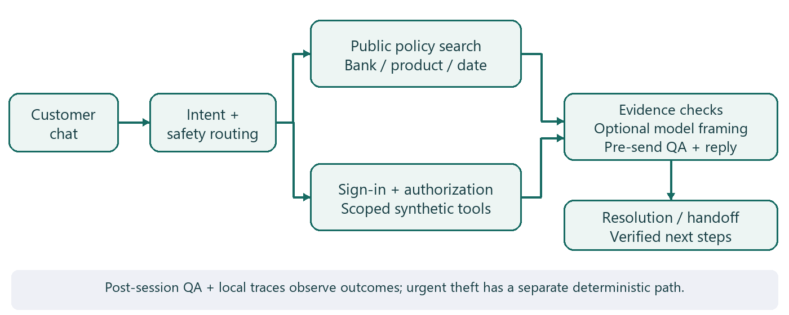
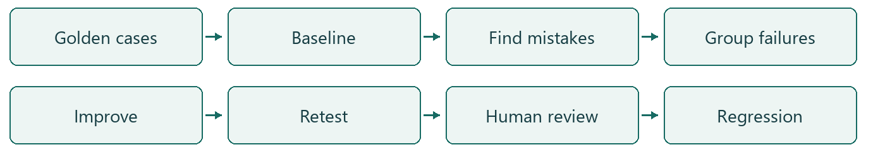
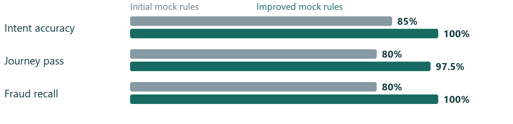

ResolveGuard Final Project SummaryRESOLVEGUARD AI | FINAL PROJECT SUMMARY | SYNTHETIC BANKINGResolveGuard AI
Secure Banking Customer Support Assistant
Accurate answers. Protected customer information. Verified support outcomes.
Prepared by: [Your Name] | Submission date: [Date]
Banking portfolio adaptation of Gen Academy Week 4 | Evidence snapshot: November 1, 2026
1. Executive Summary: What, Why, and Outcome
ResolveGuard helps customers find banking terms, understand permitted account records, report unfamiliar payments, and obtain clear next steps. It was built to examine a difficult support problem: a helpful-sounding answer can still use the wrong policy, miss a fraud report, or claim an action succeeded when it did not.
The prototype uses Bank of Whatever, a fictional bank with invented products, people, transactions, policies, and cases. This makes privacy boundaries, retries, and failures testable without real customer records. Customers can browse public information as guests; personal records require sign-in and backend permission checks.
| Project at a glance |
Summary |
| Main users |
Banking customers and staff reviewing support quality |
| What was built |
Browser chat, controlled workflows, policy search, synthetic tools, review gates, and local diagnostics |
| AI approach |
Model-assisted language within explicit workflows; access and action truth enforced by Python services |
| Evaluation approach |
Expected-behavior datasets, automated checks, failure analysis, human review, and model-based grading |
| Current status |
Implemented synthetic prototype; local evidence available; qualification remains conditional |
Three demonstrated outcomes:
- Historical mock-rule journey pass improved from 80% to 97.5% on the same 40 cases.
- The BOW release run links all 100 executed cases to local trace records.
- Banking-response LLM judging and retrieval-quality scoring were executed; both human-review submissions were received and documented.
These findings support an evaluation-driven learning project, not a production banking or compliance claim. The central lesson is to test what the assistant does and verifies, rather than only how convincing its answer sounds. [E1-E7]
RESOLVEGUARD AI | FINAL PROJECT SUMMARY | SYNTHETIC BANKING2. Customer Problem, Solution, and Architecture
Customers ask simple questions: "What is the monthly fee?", "Why was I charged?", "I don't recognize this payment", and "Was my report received?" The correct response depends on the product, the customer's access, and the actual backend outcome.
| Customer need |
How ResolveGuard helps |
Safety rule |
| Public product or fee question |
Find current, product-specific synthetic terms |
No sign-in; clarify the product when needed |
| Personal payment or case question |
Read the requested record through scoped tools |
Sign-in and permission for that specific resource |
| Potential fraud/error report |
Preserve the statement; take the permitted next step |
Capture is separate from investigation or legal receipt |
| Unresolved issue |
Record Resolution next steps and simulated escalation |
No invented acknowledgement or callback promise |
Implemented architecture

The browser sends requests to FastAPI, the Python service handling customer interactions. Public questions use product clarification and local policy search; protected conversations use LangGraph, which runs defined steps with saved state. Trusted services enforce identity, access, report storage, and tool outcomes; the model can select constrained framing around controlled facts. A pre-send quality gate checks the reply, while Resolution and post-session review record verified next steps and audit findings. Active theft uses an urgent deterministic path with synthetic protection actions; traces record observable execution, not hidden model reasoning. [E8]
Technology in brief: Python 3.12, Pydantic for typed data checks, LangGraph for workflow state, SQLite for durable records, and HTML/CSS/JavaScript for the interface. Nebius GLM-5.3-Flash supplies optional constrained reply framing and separate judge calls. Public retrieval uses metadata filtering and keyword ranking, not a deployed vector database.
RESOLVEGUARD AI | FINAL PROJECT SUMMARY | SYNTHETIC BANKING3. How Do We Know ResolveGuard Works?
An evaluation is a test: provide a customer question, define the correct behavior, run the assistant, and compare what happened with that expectation. A golden dataset is the saved set of questions and expected outcomes used for those checks.

| Evaluation area |
Plain-English question |
| Intent accuracy |
Did it identify the customer's request? |
| Product/policy correctness |
Did it select the applicable terms? |
| Authentication and authorization |
Did it request sign-in only when needed and protect other customers' records? |
| Fraud/error handling |
Did it recognize and preserve the report? |
| Grounding |
Can the answer's claims be supported by retrieved evidence? |
| Action integrity |
Did it confirm only verified backend outcomes? |
| Full journey |
Did all applicable checks pass across the interaction? |
Automated checks compare exact rules, records, and states. Human reviewers assess correctness, clarity, and appropriateness. An LLM-as-a-Judge is a model grading selected qualities against an explicit rubric; it does not authorize access or certify compliance. Traces are execution records that help explain routes, tools, and outcomes.
Evaluation sets: keep the denominators separate
| Evidence set |
Size/version |
What it establishes |
| Historical development set |
40 cases; saved stages v0-v4; three repeats per version |
Matched mock-rule improvement; 120 observations per version, not 120 unique cases |
| Original regression |
100 cases; local bindings v3 |
Synthetic workflow and safety assertions |
| BOW regression |
100 cases; local v2, trace-linked |
Bank-specific contracts under declared expectations |
| Semantic/judge samples |
Public v3: 12; curated judge examples: 12 |
Small model-based evidence samples |
| Human reviews |
22 chat and 28 overlapping Excel observations |
Live-app feedback, not independent holdout accuracy |
The BOW data contains 11 products, 19 policies, 61 policy chunks, 12 customers/accounts, and 48 transactions, plus session, case, delegation, and intake fixtures. These development datasets are not a population estimate or an independent holdout. [E1-E7,E9]
RESOLVEGUARD AI | FINAL PROJECT SUMMARY | SYNTHETIC BANKING4. Evaluation Results: What Did We Measure?
A. Historical routing improvement

Intent: 85% to 100%. Journey pass: 80% to 97.5%. Fraud/error recall: 80% to 100%. These gains used the same 40 development cases and mock rules: they are not independent live-model accuracy results. Seven unique cases improved, zero regressed in this comparison, and RG-056 remained failed. Mock p95 was 30.950 ms versus 30.577 ms; the tiny difference is not a meaningful speed claim. [E1]
B. Current automated evidence
| Saved check |
Result |
Boundary |
| Main / fixture tests |
320 passed, one skipped / 13 passed |
Local tests, not rerun for this report |
| Original100 |
100 cases passed all applicable local checks; 84/84 critical case runs |
Mock/synthetic execution; reference/provenance gates remain |
| BOW100 |
100 cases passed local checks; 100/100 trace-linked |
16 conflicting source contracts remain; not full answer-quality validation |
These are passing case-level assertion bundles, not a count of individual assertions or proof that every possible safety defect is absent. [E2,E3]
C. RAGAS and LLM-as-a-Judge: completed execution
RAGAS uses model-assisted metrics to assess retrieved evidence and answer grounding. On 12 public-policy cases, mean recall was 1.000, precision approximately 1.000, faithfulness 0.9167, and answer relevance 0.9100. Faithfulness was 0.5 for SEM-003 and SEM-011; both flags remain for review. [E4]
GLM-5.3-Flash via Nebius judged all 12 public answers PASS and graded curated examples six PASS/six FAIL. PASS requires scores of at least 4/5 for tone, policy compliance, and guardrails, with valid structured output. Qwen3-Embedding-8B supports relevance embeddings, not answer generation or a second judge. High scores do not prove bank-policy compliance. Live provider calls occurred; a verified total API cost is not reported. [E4,E5]
D. Human review: supplied and recorded
| Review receipt |
PASS |
FAIL |
PARTIAL PASS |
| HR-CHAT-22: 22 observations |
14 |
6 |
2 |
| HR-XLSX-28: 28 live-app observations |
23 |
2 |
3 |
Sets overlap: do not total them into 50 independent tests. Latest findings concern two product-context failures and three denial-wording partial passes; the reviewer clarified that another customer's case was not shown. Agreement with the judge is not calculated: the human tested live replies while the judge graded different saved replies. [E6,E7]
RESOLVEGUARD AI | FINAL PROJECT SUMMARY | SYNTHETIC BANKING5. From AI Mistakes to Measurable Improvements
RG-020: an indirect fraud report was missed
Customer: "My card was used at a gas station while I was at home; that was not me." Expected: recognize potential unauthorized use and preserve the report before restricted lookup.
| Stage |
Observed behavior and evidence |
| Initial v0 |
OTHER_OR_UNCLEAR; fraud flag false; report-preservation and handoff checks failed |
| Root cause |
Narrow mock rules missed the indirect phrase "that was not me" |
| Targeted v1 change |
Expanded indirect unauthorized-use expressions in the mock router |
| Improved v4 |
FRAUD_ERROR_REPORT; intake recorded before permitted transaction lookup; handoff check passed |
| Regression |
RG-020 passed all three v4 repeats; same-set comparison had seven improved cases and zero regressions |
This is a historical routing-rule result, not a live model reasoning gain. Baseline trace: 6c65c356-1274-4e55-93ce-7d15ea774170; improved trace: 36be76f0-b74c-4031-b74e-23c070bdcaa3. Both are embedded in the corresponding RG-020 result rows. [E1]
Remaining findings and planned ownership
| Finding |
Customer/evaluation impact |
Follow-up owner (proposed) and status |
| Two product-context FAIL marks |
Wrong context can produce misleading product advice |
Product/UX + engineering: clarify and retest; open |
| Three denial-wording partial passes |
Refusal can confuse an already signed-in customer |
UX + security engineering: improve wording; open; no disclosure observed |
| Historical RG-056 missing evidence |
Answer lacks required supporting policy |
Knowledge owner: verify applicable source; retained failure |
| Two semantic faithfulness flags |
Judge and grounding metric disagree |
Evaluation lead: inspect exact claims; unresolved |
Privacy/access issues have high potential impact; the review did not establish a cross-customer leak. These ownership proposals are not recorded operational assignments.
Source-contract conflicts: 16 still awaiting decisions
| Recorded contradiction |
Cases affected |
Impact/status |
| get_transaction both required and forbidden |
10 |
Ambiguous scoring of a safe denial versus a lookup; pending |
| get_case_status both required and forbidden |
6 |
Case-access expectations conflict; pending |
The register proposes permitting an early authorization DENIED result without disclosing records. All 16 human-decision fields remain PENDING. Live-app review marks do not silently approve these expected-tool contracts. [E10]
RESOLVEGUARD AI | FINAL PROJECT SUMMARY | SYNTHETIC BANKING6. How This Project Meets Week 4 Requirements
ResolveGuard is the selected banking portfolio adaptation. A completed banking task does not automatically complete the exact supplied e-commerce exercise. Evidence paths below are repository-relative; E references resolve in the companion evidence index.
| Criterion |
Completed work and evidence |
Status |
| Baseline evaluation |
40-case v0 expected/predicted routes; artifacts/mock_iterations_final/v0/results.json |
Completed locally |
| Failure annotations |
Cause-focused workbook notes and human observations; ResolveGuard_AI_Final_Evaluation_Submission.xlsx |
Completed; formal reference approval separate |
| Failure grouping |
Five primary categories, eight baseline failures; same workbook |
Completed locally |
| Failure labeling |
Primary categories and retained failed assertions; same workbook |
Completed locally |
| Focused improvement |
Four incremental mock-rule changes; resolveguard/model.py, prompts/ |
Completed locally for routing; live LLM prompt experiment not established |
| V1/V2 comparison |
Same cases/repeats; artifacts/mock_iterations_final/comparison.json |
Completed locally |
| Regression checks |
Paired failures and current suites; artifacts/remediation_20261101/Status_Summary.json |
Completed locally; qualification blocked |
| Banking LLM judge |
Saved grades and artifacts/remediation_20261101/report/LLM_Judge_Analysis.xlsx |
Completed and verified |
| Judge calibration |
Human feedback recorded; artifacts/remediation_20261101/calibration_status.json |
Partially completed; zero matched pairs, no second judge |
| Hosted LangSmith |
Local spans and SDK; docs/OBSERVABILITY_RUNBOOK.md |
Not completed: cloud read-back unverified/deferred |
The handout's optional binary failure-category judge was not selected; the executed banking response-quality judge is a separate adaptation. Its calibration is distinct from completed judge execution and received human feedback. [E5,E11]
Evidence and reproducibility
The 16-tab submission workbook preserves 15 original evaluation tabs plus the Human Review Receipt. The saved analysis notebook recalculates historical evidence; it is not a newly executed live-agent notebook. Python 3.12 and the uv lockfile support local execution, but the exact historical code/fixture checkout was not recovered, so a current rerun need not reproduce historical timings. [E12]
Local diagnostics provide case-linked traces, backend statuses, errors, and available timing/model metadata. Staff playback reads recorded evidence rather than repeating financial actions. Cloud experiments are not verified by local trace coverage.
No new tests, model calls, cloud experiments, or application changes were performed to write this report. Existing screenshots are historical captures, not fresh remediation verification. The final demo video remains unrecorded. [E13]
RESOLVEGUARD AI | FINAL PROJECT SUMMARY | SYNTHETIC BANKING7. Outcomes, Lessons, Limitations, and Submission
What product and engineering teams learned
- A correct intent does not guarantee a correct banking outcome. Product acceptance must include evidence, permissions, reporting state, and useful customer language.
- Customer privacy and truthful action confirmations belong in trusted services outside the model. Family relationships alone grant no access; signing in does not authorize every account or action.
- Failures should drive specific fixes and retests. Structured routes, bank/product/date metadata, synthetic fixtures, regression checks, and traces make defects easier to isolate without rewriting everything.
Current limitations and next decisions
Resolve the 16 source-contract conflicts and provenance approvals; retest remaining UX findings; review semantic disagreements; obtain exact-response human labels if claiming judge agreement. Development cases are not independent holdout tests. Cloud LangSmith evidence, Replit deployment, and real bank integrations remain deferred; no real money moves, card changes, refund guarantees, or official bank cases occur.
The prototype does not establish production reliability, universal masking, legal receipt compliance, or regulatory certification. Production use needs approved identity, policies, retention, service ownership, and operational monitoring. Final video, upload, public repository URL, and license are not established. Human feedback receipt is complete; resolving every comment is a different task.
Project links
| Resource |
Placeholder |
| GitHub repository |
[Insert GitHub Repository Link] |
| Live application |
[Insert Live Application Link] |
| Evaluation workbook |
[Insert Evaluation Workbook Link] |
| Evaluation results |
[Insert Evaluation Results Link] |
| Human review evidence |
[Insert Human Review Link] |
| LLM judge and RAGAS evidence |
[Insert LLM Judge and RAGAS Links] |
| Architecture documentation |
[Insert Architecture Link] |
| Demo video |
[Insert Demo Video Link] |
| Final submission package |
[Insert Submission Package Link] |
What was achieved: a working synthetic banking-support prototype with controlled tools, matched mock-rule improvement, completed model-based grading, and recorded human feedback.
What remains: reference decisions, UX follow-up, matched-response calibration where claimed, and final submission evidence; cloud and real banking remain deferred.
Submission readiness: conditional for the adapted banking portfolio; not a claim of strict hosted-trace track completion or production readiness.